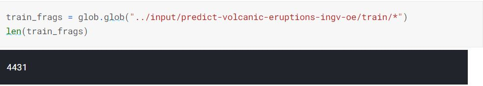
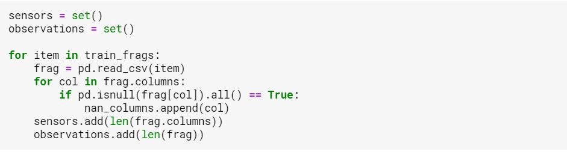
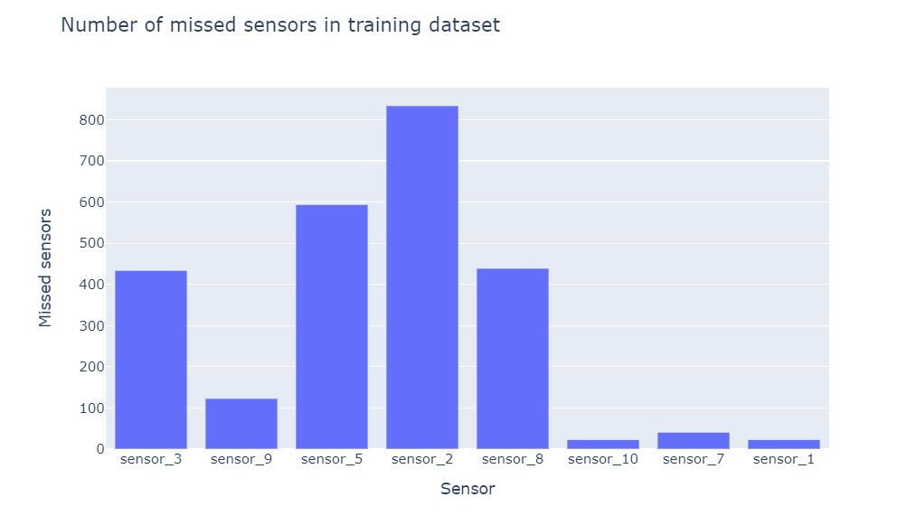
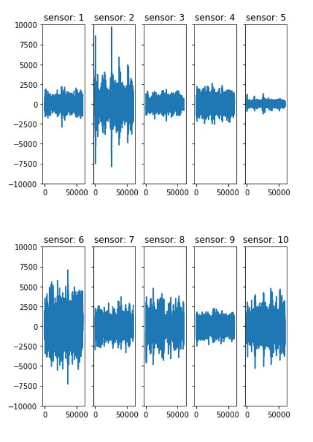

Volcanic Eruption Prediction
Kaggle Competition: Volcanic Eruption Prediction, National Institute of Geophysics and and Volcanology

#1. The Challange
As part of my current Data Science Internship, I am given 1 day a week to focus on 'skill development'. So between today and one day next week I'll be tackling this Kaggle problem. My objective is just to refresh myself on all the steps of the data science process, I am not overly fixated on producing the highest performing model (this time). I'll also try and take some time and see what other people have done, and learn from their steps in the process. Hopefully this will both help me practice and develop new skills. I chose this specific challange as it was new and seemed fairly straight forward at first glance.
The task is to predict in exactly how many seconds a volcano is going to erupt. You are given many site (volcano) ID's and sensor values for each site. Each site has a known eruption time and I believe the sensors reflect tremours in the ground prior to eruption.
#2. Looking at the data
The first hurdle is filling type, but it's a common one in the world of data science. Rather than your data being neatly given in a single csv dataframe, each volcano has its own csv with the ten senors as the ten rows. There's another csv for the id's and eruption times. To get over this hurdle, It's as simple as using the glob funtion and a for loop.

Now run it through the for loop and creat sets for tehe desired features.

After that we can see see interesting summaries of the data like: how many of each sensor type are missing across all sites?

And a quick look at what a sites sensors might look like...

Since it seemed to be fairly common that A site would be missing a sensor, I wanted to factor it in to my analysis. Now that I have a column to represent missing sensors. I did a quick check for na's within a few of the dfs and they seem to be exceptionally rare, so for now I will just fill with zero. this could be something that is relooked at latter, in terms of improving the model. Now what I'm going to do is gather descriptive date for each sensor and I'll use that for the variables of my model... but for now I still need to do some of my daily work and probably a couple of Leetcode questions to keep my skills sharp. I'll revisit this next week!

Stuart Ross
A Data Science Intern at Leeds Institute of Data Analytics. This was completed in my spare time as an independent learning oppertunity... and honestly just for a bit of fun too.